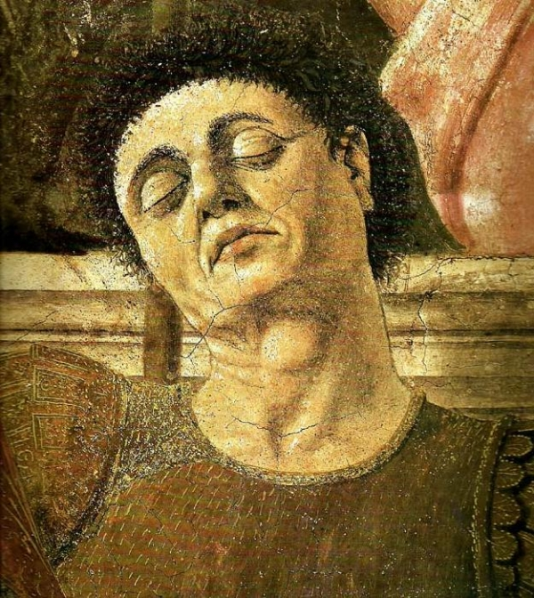

Piero della Francesca
Il più perfetto esempio di corte umanistica è il palazzo Ducale eretto da Federico da Montefeltro nella piccola Urbino. Con una lungimiranza veramente eccezionale, il duca ospita ad Urbino, letterati, umanisti, architetti e pittori di varie nazioni, ciascuno dei quali contribuisce ad un dialogo internazionale sull'arte di altissimo livello. Su tutti spicca Piero della Francesca, che esegue opere destinate a diventare esempi assoluti, come la Pala Montefeltro, oggi nella Pinacoteca di Brera a Milano, modello insuperabile di sintesi prospettica di forma e colore.